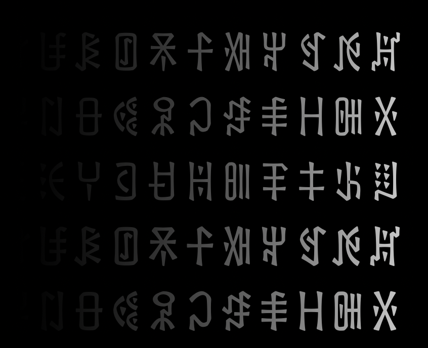

Script Encoding Research文字编码研究
Comparable Writing Units for Ideographic Yi表意彝文可比较书写单位研究
Establishing comparable writing units in a non-unified writing system: a grapholinguistic approach based on ideographic Yi
在非统一文字系统中建立可比较书写单位：基于表意彝文的字符学方法
A grapholinguistic case study of the Ideographic Yi Unicode Submission Working Group's effort to turn scattered, image-based character sources into a single comparable, traceable dataset.
表意彝文编码提交工作组的字符学案例研究，致力于将分散的图像化字符资料，转化为统一、可比较、可追溯的数据集。
View details查看详情